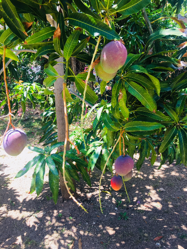
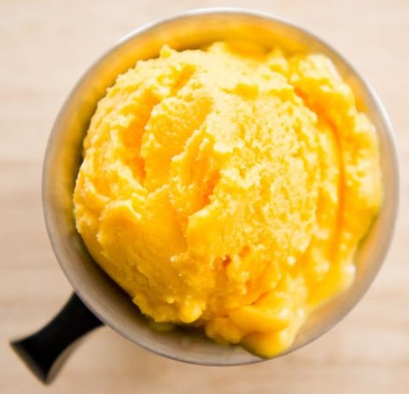
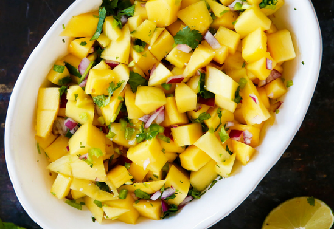

The Benefits of Fruits: Mango
Mango is native to southern Asia, especially Burma and eastern India. It spreads early on to Malaya, eastern Asia and eastern Africa. Mangoes are grown throughout the tropics, from the Caribbean to Africa, South-East Asia, Australia, as well as India, where the history of the fruit goes back over 6,000 years and closely connected to the Hindu religion. As long ago as the 16th century, mangoes had been distributed via cultivation throughout the Indian subcontinent, and eventually to all tropical regions of the world.
Health Benefits
According to WebMD website, there are a lot of raisons to love mangoes, among others:- Mangoes may help whittle your middle
They may seem more like a decadent dessert than a healthy fruit, but mangoes are diet-friendly. Because they are naturally sweet, eating them can help quash your cravings for candy or other sugary foods. A one-cup serving of fresh mango has 100 calories, and because that same serving has three grams of filling fiber, you will feel fuller on fewer calories. In fact, mangoes are 83% water by weight, and research from Penn State University has shown that eating foods that have a high water content (and lower energy density) help to keep you fuller while eating less. In fact, one of their studies found that eating a piece of fruit before a meal reduced the calories consumed at that meal by 15 percent. -
They pack a powerful nutrition punch
Bursting with over 20 vitamins and minerals, mangoes are loaded with good nutrition and health benefits. Just one cup provides 100% of our daily vitamin C needs, helping to strengthen our immune system, keep our teeth and gums healthy, and support collagen formation–hello, beautiful skin! Mangoes are also rich in fiber, a nutrient that helps you to fill up, not weigh you down.
Recipes
Mango Lassi
Author Notes: The inspiration for this recipe comes from the mango lassi: the rich, golden-hued, yogurt-based drink commonly served alongside Indian curries to act as a sort of culinary fire extinguisher. At home, we usually serve lassis as a dessert, so I thought: why not take it a step further and really turn it into dessert? And mango lassi frozen yogurt was born!
A couple of notes on the ingredients:
My mango pulp comes pre-sweetened (not drastically, but still). If you're starting with unsweetened
pulp, you may want to increase the sugar by a tablespoon or two.
Using a fuller-fat yogurt like whole milk yogurt will add richness and help prevent your
frozen yogurt from freezing rock-hard.
2 cups canned mango pulp (see note above)
1 cup plain whole milk yogurt
1/2 cup half and half (12.5%) milk
1/4 cup + 2 tbsp white sugar
1 tsp rosewater (optional)
Place all ingredients in a blender or large bowl and blend/whisk until smooth. If necessary, chill the mixture until super-cold and give it one last whir/stir. Pop chilled lassi mixture into your ice cream machine and freeze according to the manufacturers instructions. Once it is done in the machine, transfer frozen yogurt to a freezer-safe container and freeze until it is firmed up to your liking (this might take a few hours). If the frozen yogurt freezes quite hard, give it a few minutes to warm up before you start scooping.
 All Purpose Mango Salsa
Ingredients:
1/2 cup fine oinon, finely diced
1 lime juiced
1 japaleno, finely diced
1 small handfull cilantro, finely chopped
Source Mango.org.recipes